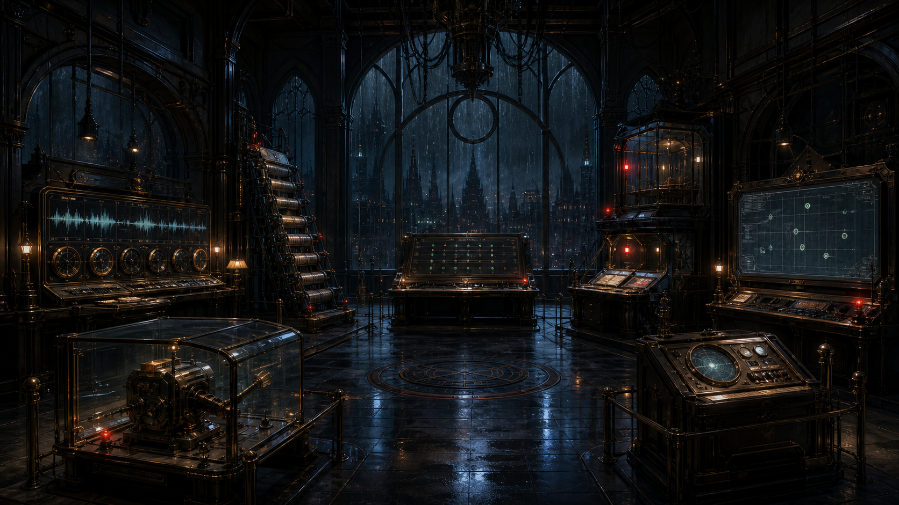

雨夜调查局 · 第 09 案
AI行为调查局
延迟的回声
声音、画面、闸位和人的打断都是真的。
可它们到得有早有晚，回声因此在错误的时刻作答。
校准四路时钟
→
查看回声档案
← 返回主页
返回案件目录
CASE
09
先按事情发生的时刻排队，再决定该回应什么
A
延迟的回声
AI行为调查局 · CASE 09
调查进度
0 / 5
返回主页
案件目录
?
◇
回声档案

01
语音回声钟
02
画面延时屏
03
闸位回条柱
04
人工打断线
05
快慢状态桥
06
北岸终态台
回声网络节点 · ABI-ECHO-00/09
北岸回声调度厅 · 四钟封锁区
回声七号
×